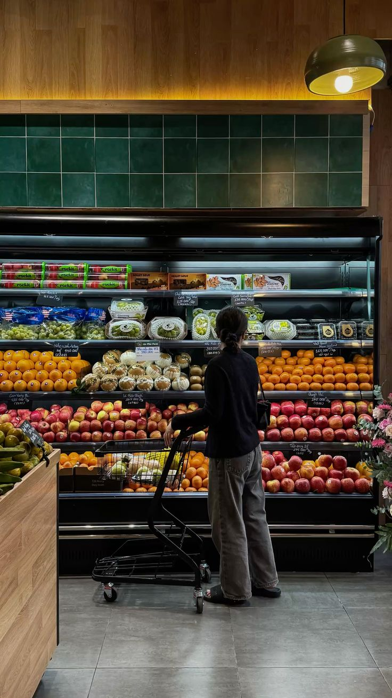
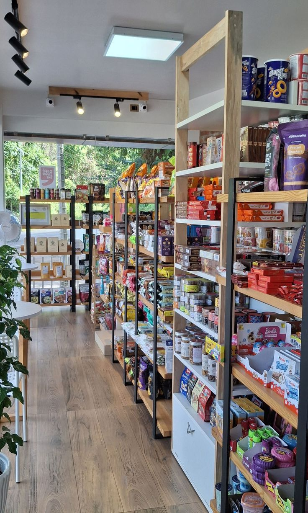
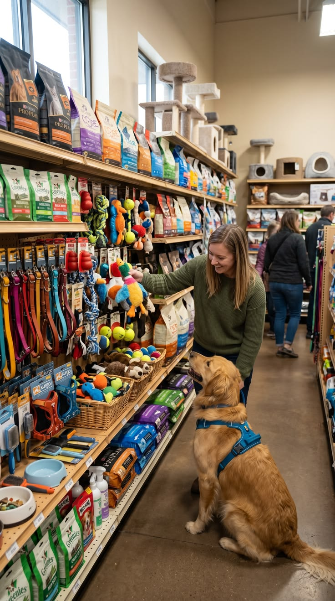

Canasta Basica
Granos, aceites, lacteos, frescos y todo lo esencial para tus comidas diarias. Antes: $5.000 Ahora: ¡Oferta especial!
Es tu tienda de confianza en el barrio. Encuentra todo lo que necesitas para tu hogar sin ir muy lejos, con la mejor atencion y precios justos.

Granos, aceites, lacteos, frescos y todo lo esencial para tus comidas diarias. Antes: $5.000 Ahora: ¡Oferta especial!

Detergentes, desinfectantes y articulos de limpieza de la mejor calidad para mantener tu casa impecable.

Concentrados, snacks y accesorios para consentir a tus fieles compañeros peludos.
Te esperamos todos los dias de la semana:
Si no puedes salir de casa, sigue estos sencillos pasos:
"La Esperanza me salvó la vida el domingo pasado cuando necesitaba azúcar y no quería ir al supermercado grande. ¡Atienden súper rápido!"
"Tienen de todo para mi perrito y los precios de los abarrotes son muy justos. Da gusto comprar en el barrio."
"Se encuentra un pan muy rico de panaderia y a toda mi familia le gusta, mas que todo el pan de queso."
Encuéntranos en nuestra sede principal ubicada en el barrio Rio de Hato: